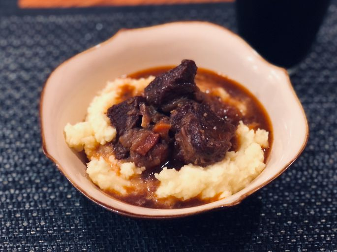

Beef and Guinness Stew

| Prep time |
Cook time |
Servings |
| 30 mins |
2h 30mins |
6 |
Perfect Guinness beef stew recipe for cozy days at home.
This Guinness beef stew is a very simple dish, but at the same time, it has a deep, complex, rich flavor
I served this in a nice ring of green onion-mashed potatoes.
I hope you give this a try, whether for Saint Patrick's Day or any time of the year.
Ingredients:
- Bacon: You'll use the bacon and the bacon fat to cook the beef.
- Beef: Cut your boneless beef chuck into 2-inch pieces.
- Seasonings and herbs: This flavorful beef stew is seasoned with salt, black pepper, fresh garlic, white sugar, and fresh thyme.
- Beer: You'll need a can of dark beer (such as Guinness)
- Vegetables: This chunky Guinness stew features onions, carrots, and celer
- Tomato paste: Tomato paste adds richness and flavor depth.
- Stock:Use store-bought or homemade broth. You can use chicken or beef stock.
- Mashed potatoes: Use store-bought or homemade broth. You can use chicken or beef stock.
Now that we are done with our grocery list, let's begin Step-By-Step:
- Cook the bacon. Transfer the bacon to a stew pot, but leave the fat in the skillet.
- Cook the beef cubes in the fat. Place the browned beef in the stew pot.
- Cook the onions and garlic in the fat. Pour the beer in and stir.
- Transfer the contents of the skillet to the pot. Add the remaining ingredients.
- Simmer until the meat is tender, then bring to a boil.
- Serve in bowls or over mashed potatoes.
Back to the front page, for more delicious recipes!